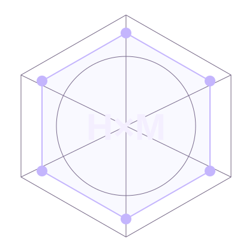

The Collection · Jon Gosier
Different Powers.
Better Questions.
Six projects for making, reasoning, testing, rehearsing, simplifying and writing clearly. Choose the one your question needs.

Dazzler
Create / Public SkillExpressive visual interfaces, typography, color and composition.
02Longshot
Test / Public Review SkillTest interface tasks and report reproducible findings.
03Style Science
Reason / Design ToolkitConnect design requirements to checks and evidence.
04Spiral
Rehearse / Workflow SkillFind gaps in handoffs, ownership and recovery.
05Shatterstar
Simplify / Product SkillSimplify products while preserving important tasks.
06Mojo
Write / Language SkillClear AI outputs without repetition, needless nuance or cautious padding.
Complementary by Choice
Start With the Question.
Choose Your Tool.
Rehearse a handoff before building. Make its constraints inspectable. Test a rendered task. Challenge unnecessary complexity. Make the language clear and direct. Choose the tool that fits your task.
Six Projects. Distinct Roles.
Open a project for setup and examples, or browse the full collection. Explore the Project Catalog.
About the Name
A Playful Nod.
An Independent Collection.
Hex Men is a playful nod to X-Men, whose character names inspired the collection. There is no official Marvel affiliation or endorsement.